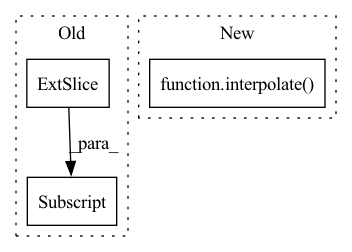

Pattern ID :14094

Before Change
size = torch.randint(int(.5 * width), int(.98 * width), ())
offsetx = torch.randint(0, width - size, ())
offsety = torch.randint(0, width - size, ())
apper = out[:, :, offsetx:offsetx + size, offsety:offsety + size]
apper = torch.nn.functional.interpolate(apper, (224, 224), mode = "bilinear", align_corners = False)
pieces.append(normalize_image(apper))
image = torch.cat(pieces)
After Change
for _ in range(num_images):
cutout = rand_cutout(out, ratio = (lo, hi))
if exists(downsize):
cutout = interpolate(cutout, downsize)
resized_cutout = interpolate(cutout, 224)
pieces.append(normalize_image(resized_cutout))
image = torch.cat(pieces)
In pattern: SUPERPATTERN
Frequency: 3
Non-data size: 3
Instances
Fragment ID: 47043284
Project Name: lucidrains/deep-daze
Commit Name: 31c2b6b8607914862120163bc48908ad3e6b5c12
Time: 2021-01-17
Author: lucidrains@gmail.com
File Name: deep_daze/deep_daze.py
M Class Name: DeepDaze
N Class Name: DeepDaze
M Method Name: forward(3)
N Method Name: forward(3)
M Parent Class: nn.Module
N Parent Class: nn.Module
M File Name: deep_daze/deep_daze.py
N File Name: deep_daze/deep_daze.py
M Start Line: 67
M End Line: 83
N Start Line: 96
N End Line: 113
'>
Before Change
exist_x = exist_frames
exist_y = data[exist_frames, marker, axis]
interp_y = interpolate.interp1d(exist_x, exist_y, kind="quadratic")
output[:, marker, axis] = np.array(interp_y(all_frames))
return output
After Change
def quadratic_interpolate(data, interval):
return interpolate(data, interval, "quadratic")
'>
Fragment ID: 47043283
Project Name: yknishidate/morecon
Commit Name: 5404bf51fefd2ca1a1d8c205e569a5769fdcebd9
Time: 2022-01-29
Author: yuki18425@gmail.com
File Name: interpolation.py
M Class Name: AnonimousClass
N Class Name: AnonimousClass
M Method Name: quadratic_interpolate(2)
N Method Name: quadratic_interpolate(2)
M Parent Class:
N Parent Class:
M File Name: interpolation.py
N File Name: interpolation.py
M Start Line: 21
M End Line: 31
N Start Line: 25
N End Line: 25
'>
Before Change
exist_x = exist_frames
exist_y = data[exist_frames, marker, axis]
interp_y = interpolate.interp1d(exist_x, exist_y)
output[:, marker, axis] = np.array(interp_y(all_frames))
return output
After Change
def linear_interpolate(data, interval):
return interpolate(data, interval, "linear")
def quadratic_interpolate(data, interval):
return interpolate(data, interval, "quadratic")
'>
Fragment ID: 47043282
Project Name: yknishidate/morecon
Commit Name: 5404bf51fefd2ca1a1d8c205e569a5769fdcebd9
Time: 2022-01-29
Author: yuki18425@gmail.com
File Name: interpolation.py
M Class Name: AnonimousClass
N Class Name: AnonimousClass
M Method Name: linear_interpolate(2)
N Method Name: linear_interpolate(2)
M Parent Class:
N Parent Class:
M File Name: interpolation.py
N File Name: interpolation.py
M Start Line: 7
M End Line: 17
N Start Line: 21
N End Line: 21